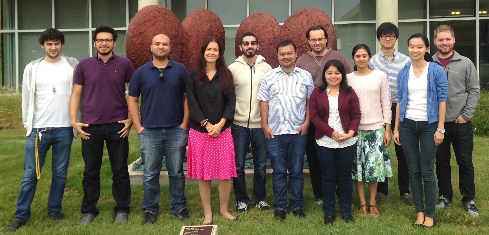

Language and Information Technologies (LIT)
LIT (Language and Information Technologies) is a research group at the University of Michigan, working on research projects in natural language processing, information retrieval, and applied machine learning. The Language and Information Technologies research group was established in 2002 at the University of North Texas, with the aim of promoting research and education in natural language processing, information retrieval, and applied machine learning. The group moved to the University of Michigan in 2013.
Faculty and students work on several aspects of the science and technology of language processing, including projects in areas such as lexical semantics, sentiment and subjectivity analysis, graph-based natural language processing, multilingual text processing, and others.
The group has received research funding from the National Science Foundation, Google, the State of Texas, the National Endowment for Humanities.
Physical Location: Computer Science and Engineering Bob and Betty Beyster Building 2260 Hayward Street Ann Arbor, MI 48109-2121